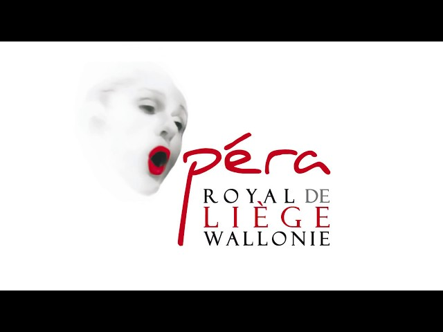

Bienvenue sur mon CV
Voici mes différents stages
| 05/09/2017 – 24/11/2017 | Ateliers de l'Opéra Royal de Liège |
|---|
| Transformations (accessoires, vêtements, matières) |
| Recherche de finitions, plan de réalisation |
| Vérification des produits finis et suivi de la production |
| Couture de pièces d’époques (redingotes, etc…) |
| Apprentissage de la vie dans un atelier, travail en équipe |

| 15/03/2017 – 31/07/2017 | Natacha Cadonici, créatrice indépendante à Bruxelles |
|---|
| Coupe en matelas aux ciseaux électrique |
| Gestion d’une boutique seule |
| Accueil des clients et ventes |
| Comptabilité, informatique |
| Patronnage collection FW 2017 |
| Couture prototypes |